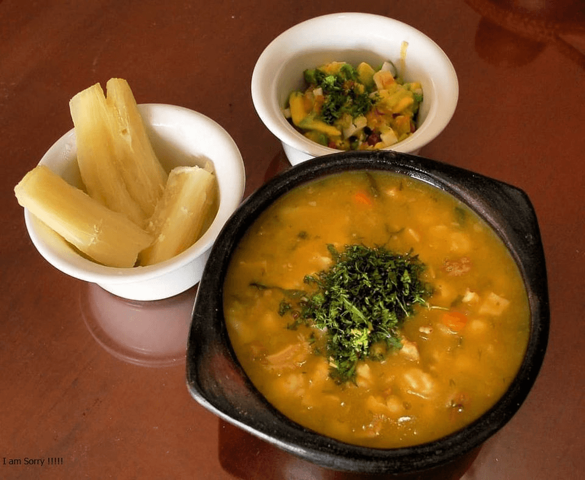
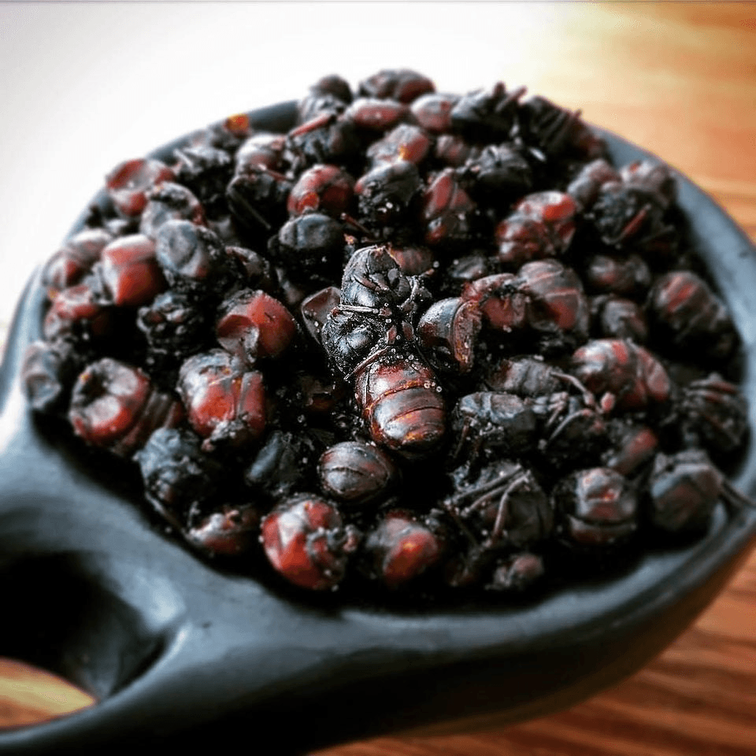

Lugares turisticos
Comida tipica
- Mute
- Carne oreada
- Hormigas culonas
El mute es una sopa que se prepara con diferentes ingredientes que se complementan perfectamente: carne, tripa, costilla de res, granos, papa, pastas, maíz y especias. Es una sopa que por su cantidad de ingrediente se hace un poco espesa, pero es realmente deliciosa.
Esta es una carne de res marinada, salada y secada al sol, lista para azar. Es un plato clásico y lo encuentra en muchos restaurantes, es nuestra especialidad. "Pura tragadera, pero es que esta carne con yuca y ají…tienen mucho huevo".

"Si en México comen chapulines nosotros tenemos nuestras hormigas culonas."" Ellas son un plato tradicional de la cultura Guane, se les quita la cabeza, las alas y las patas para luego sofreírlas y condimentarlas con sal. Y a tragar se dijo, sin mente.
Sector economico
La economía de Santander se basa en la agricultura, la ganadería, la industria y el turismo
- Agricultura: Cultivo de café, cacao, caña de azúcar, tabaco y frutas.
- Ganadería: Producción de carne y lácteos, con un sector bovino fuerte.
- Industria: Procesamiento de alimentos, textiles, calzado y productos químicos
- Turismo: Destinos como San Gil (deportes extremos), Barichara (pueblo colonial) y el Cañón del Chicamocha.
- Comercio y servicios: Bucaramanga es un centro comercial y financiero clave en la región.
Su economía es dinámica, con un equilibrio entre el sector agropecuario, la industria y los servicios.